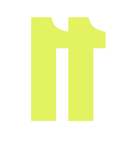

05 · Sistema de Logo
Logotipo
Logotipo
e Isotipo
Uso principal
Blanco · sobre oscuro
Uso secundario
Negro · sobre claro
Uso especial
Negro · sobre acento
Espacio mínimo
La altura de la letra N define el espacio de protección en todos los lados. No colocar nada en esa área.
Tamaño mínimo digital
Logotipo completo: 80px de ancho mínimo.Isotipo en solitario: 24px.
Prohibido
No rotar. No deformar. No añadir sombras. No usar sobre fondos que no sean los tres aprobados.
Isotipo — Uso en reducción
Blanco

Negro

Acento